さて。
椿堂を拝観後、向かうは椿大堂（善通寺）である。
ややこしくて申し訳ないが、それもこの椿大師の特色でもあるので御勘弁を。
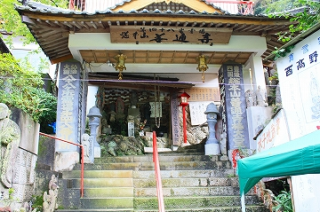 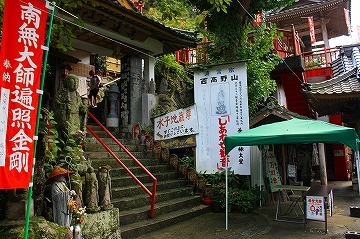
先程の椿堂の山門を潜ったすぐ脇に椿大堂の入口はある。
椿堂が比較的平地に建っているのに対してこちらは傾斜地に位置している。
従ってすぐ隣とはいえ趣は随分違う。
階段の途中には小さな石像が所狭しと並んでいる。
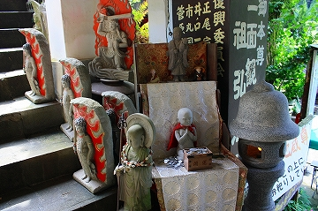 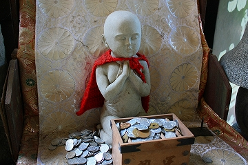
その一画には水掛け地蔵が。
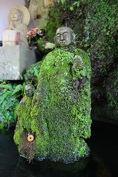
頭だけ苔がのっていない、ということはそこだけ丁寧に洗っているのだろうか？
さらに進むと鐘楼が。
先程、外から見た時に見えた赤い塔はこの鐘楼の基壇だった。
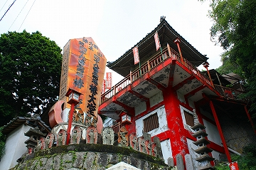
ただし鐘楼の崖側には階段が付いていて、そちらからも昇降出来るので、単なる基壇というよりはやっぱり塔といってもいいのかもしれない。
そんな鐘楼の前に並ぶ石像…
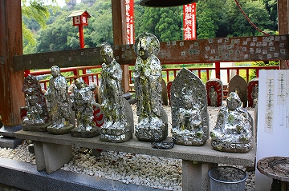
ああここにも金シール貼りまくられ石仏が。
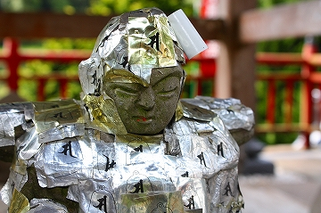 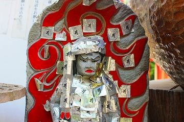
先般の熊野磨崖仏であれだけフィーチャーしたのに…もしかしてこの地方ではポピュラーな信仰形態なのでは？
（注；この後、福岡県でも同様のシール石仏を発見。やっぱりプチ流行ってるみたい）
鐘楼の脇には観音サマが立ち、周囲にも観音サマｓ、さらに台座の部分にガラス戸になっていたので中を覗いてみるとミニ観音ｓが並んでいた。
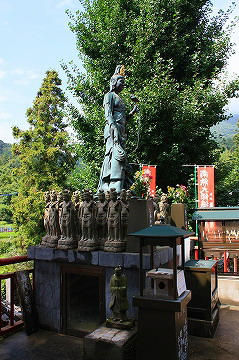 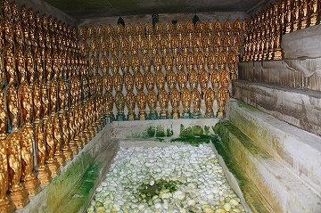
鐘楼の対面には椿大堂(善通寺）の本堂が。
こちらには髪の毛や松葉杖は奉納されてなくて少しホッとした。
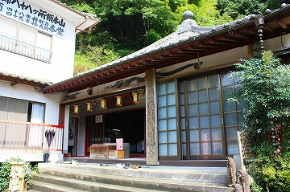 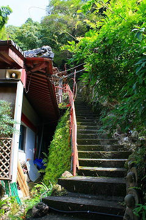
本堂の脇にさらに山の上に向かう階段がある。
段々人外魔境になってきたぞ…
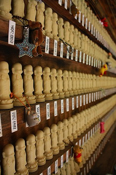 登り道の途中にある水子供養コーナー。
粘土で出来た不動サマが恐かったです。
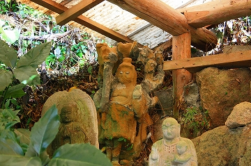
そんなこんなで、一番上には奥の院が。
壁に何か貼りついてますね。
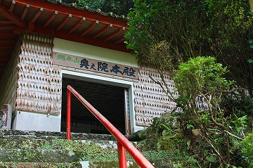
シャモジです。
シャモジといえば全国的には広島の宮島が有名だが、大分では羅漢寺のシャモジ奉納が思い浮かべられる。
ここのシャモジ奉納は地理的に恐らく後者の影響かと思われる。
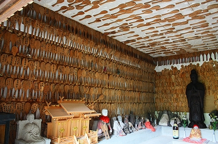 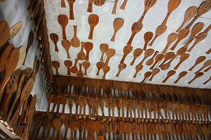
壁を埋め尽くす大量のシャモジ。その群れは壁だけでなく天井をも侵食している。
さしずめ空飛ぶシャモジ、といったところだろうか。何だかデスラー艦隊みたい。
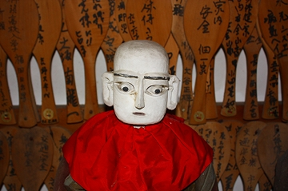
ややイッちゃってる感のある大師サマ。
チト操り人形っぽい。
奥の院を後にし、再び鐘楼のところに戻ってくる。
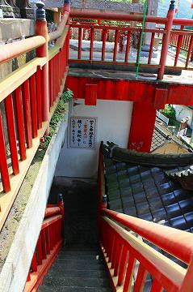
鐘楼の外側には外階段が付いており、その先は赤い塔の中を通って椿堂の山門の脇に出るようになっている。
その外階段を下りはじめた途端、こんな光景が目に飛び込んできたのだ！
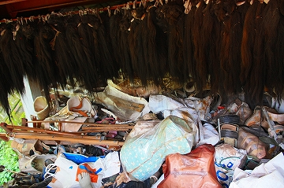 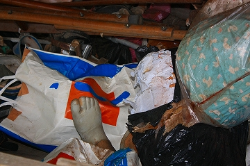
うへ〜。こっちにもあるじゃん、髪の毛。
椿堂の本堂に掛けきれなかった髪の毛をこちらに保管しているのであろう。
先程の椿堂にあった髪の毛は熊の毛みたいだったが、こちらのはまごう事なき人毛である。
恐らくこちらの髪の毛の方が奉納時期が新しいので、その分なにやら艶めかしい。
生々しい髪の毛が壁のように押し迫ってくる様は無言のプレッシャーをかけられているような異様な迫力がある。
というより怖い…もう頭の中はどこから貞子が出てくるのか気が気じゃないんですけど。
また、髪の毛の下には義足やギブス、松葉杖等が乱雑に積まれていた。
快癒の御礼なのだろうが、こちらもえもいえぬ迫力がある。
階段をおりて赤い塔の中へ入る。
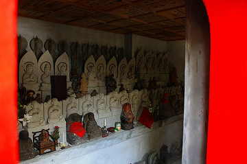 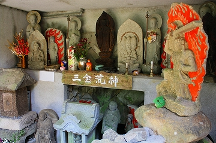
こちらには椿堂のご霊窟とよく似た石像が並んでおり、真言宗及び山岳信仰系の雰囲気に満ちている。
おお、アナタは…
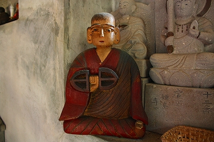
さっき奥の院にいらっしゃった操り人形大師サマのご兄弟ではないですか。
手に持つのは三鈷杵なのだろうか、それともハンドミキサー？
てな具合で椿大堂拝観完了。
残すは椿光寺。
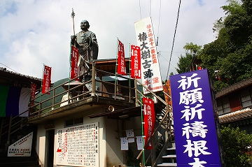
椿光寺の最大の特徴は何といっても入口付近にある修行大師像。
口語と文語が入り混じった何やら回りくどい難文を以って由緒を述べているので、煙に巻かれている気分になってくる。
要約すると弘法大師由来の椿の大樹があった跡地にこの修行大師像を建立したのだとか。
まずは本堂にお参りさせてもらう。
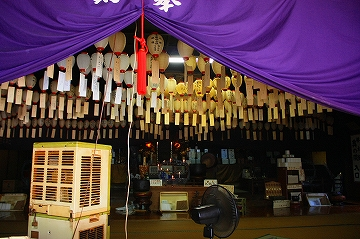
天井からは無数の提灯が吊り下げられており、壮観だ。
提灯には願い事が書かれており、その下に願主名が書かれた札が下がっている。
風鈴のように風が吹くと札がひらひら〜っと舞い、涼しげだ。もっとも扇風機の風ですけどね。
修行大師像の高さは4〜5メートルといったところだろうか。
平屋の建物の上に台座があり、その上に立っているので像高よりは大きく見える。
台座の裏側に回ってみると普段は開けてなさそうな開口部があった。恐らくメンテ用なんでしょう。
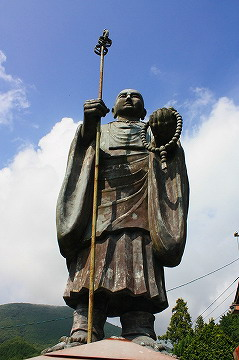 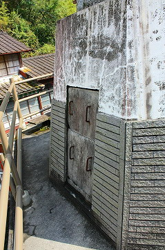
さて、大師サマの下には大師堂という額のかかった味も素っ気もない建物がある。
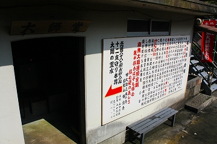
中には四国八十八ヵ所お砂踏み霊場と十二支護り本尊…
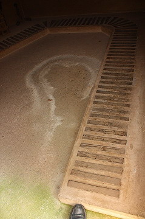 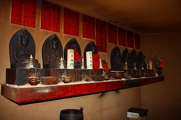
そして大師の霊水があった。
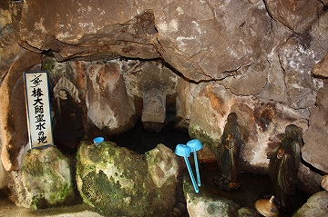
…ってさっきの椿堂のご霊窟にもご霊水ってあったじゃない！
一体どっちがホンモノの椿大師レジェンドの霊水なんだ？
…と思ったものの、冷静に考えれば千年以上も前の話、そんなに目くじら立てなくてもいいか。
むしろそれぞれのお寺が椿大師伝説をとても大切にしている、という事実に着目すべきではなかろうか。
ホントかどうかも判らない（というかかなり眉唾な）伝説なのにそれを当たり前の史実のように語り、信仰していくその力強さこそが特筆されるべきだ、と私は思う。
一口頂いてみた。冷たくて美味しかった。
たとえ弘法大師が湧かせた水じゃなくても、それが「水」だというだけでアタシにゃ充分有り難かったですよ。
2008.08.
珍寺大道場 HOME